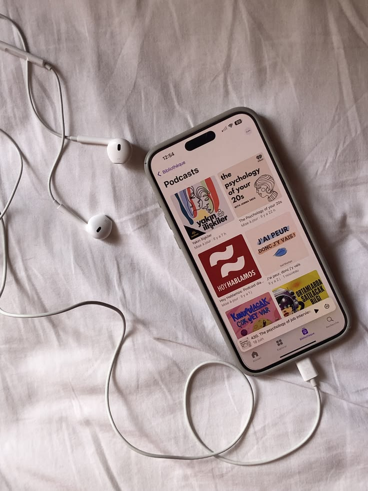
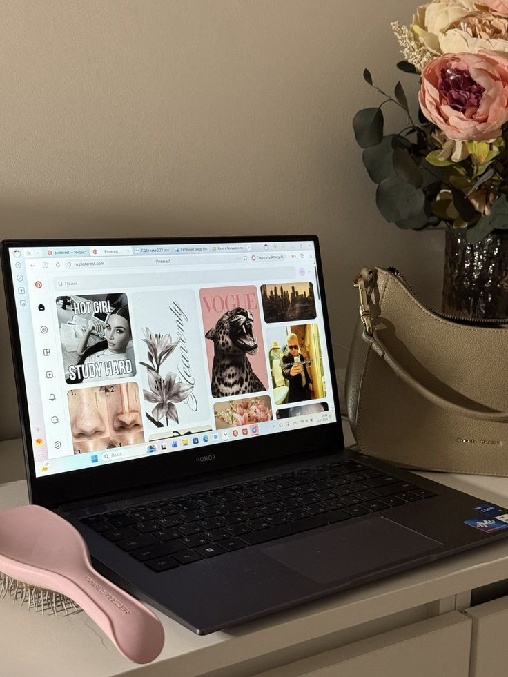
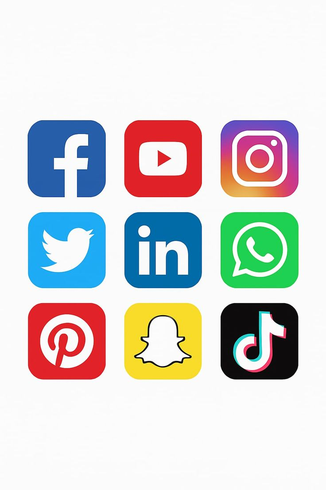

Media sosial merupakan bagian dari kehidupan sehari-hari yang digunakan untuk berkomunikasi, mencari informasi, belajar, dan berbagi berbagai hal. Dengan media sosial, kita dapat terhubung dengan orang lain tanpa terbatas oleh jarak dan waktu. Kehadiran teknologi ini memberikan kita kemudahan luar biasa dalam mengakses pengetahuan baru serta menjalin silaturahmi dengan teman maupun keluarga di mana saja. Namun, media sosial juga harus digunakan dengan baik dan bertanggung jawab agar tidak menimbulkan dampak negatif. Menggunakan media sosial dengan benar berarti mampu menjaga sikap, perkataan, dan tindakan saat berada di dunia digital. Kita perlu memeriksa kebenaran informasi sebelum membagikannya, menghargai orang lain, menjaga privasi, serta berhati-hati dalam berinteraksi dengan pengguna lain. Selain itu, penggunaan media sosial juga perlu dilakukan secara seimbang agar tidak mengganggu kegiatan belajar, istirahat, maupun kehidupan sehari-hari. Dengan membiasakan diri bersikap bijak sejak dini, kita dapat menciptakan lingkungan internet yang jauh lebih aman, positif, dan memberikan manfaat nyata bagi diri sendiri maupun orang lain